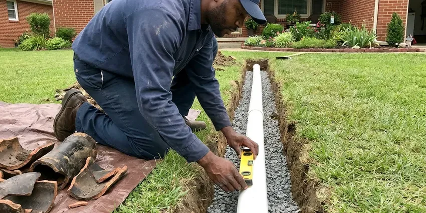

Water Heater Repair in Keizer, OR
Dealing with a cold shower or a leaky water heater in Keizer, OR? Our team provides dependable water heater repair services to get your system back in working order.
- Fast, Local Service
- Clear Pricing
- Guaranteed Repairs
- Warrantied Repairs

Expert Water Heater Solutions Available Now in Keizer, OR.
Don't let a faulty water heater disrupt your home, contact JFL Plumbing for prompt assistance.
Water Heater Repair in Keizer, OR for Gas, Electric and Tankless Units
JFL Plumbing specializes in comprehensive water heater repair, addressing everything from minor leaks to major malfunctions. We understand how crucial consistent hot water is for your household, especially during the colder months, and our team is equipped to handle all models and makes.
Our expertise includes:
- Troubleshoot and fix all water heater brands.
- Sediment flushing, anode rod swaps and relief valve replacement
- Repair gas, electric, and tankless units.

Additional Plumbing Repair Services in Keizer, OR
We offer expert plumbing repair services across Keizer, OR to fix leaks, restore flow, and keep your system running smoothly.


Customers
Why Choose JFL Plumbing for Water Heater Repair in Keizer, OR?
Choosing JFL Plumbing means you're getting local experts who understand the plumbing needs in Oregon. We focus on quick diagnostics and lasting repairs for your water heater.
- Certified Technicians, Our plumbers are highly trained and experienced in all aspects of water heater repair and maintenance.
- Safety Checked, Venting, gas connections and relief valve discharge are checked on every call.
- Local Expertise, We understand how local water and soil conditions impact water heater longevity and performance.
Citywide Coverage
From older neighborhoods with 40-gallon gas tanks to newer homes with high-efficiency or tankless units, our plumbers cover all of Keizer. You get the same fast response wherever you live.
Experienced Team
Our plumbing technicians have broad experience with all types of water heaters common in Oregon, from traditional tank models to modern tankless units. They are regularly trained on current repair techniques and safety protocols.
Safety-First Approach
Gas connections are leak tested after any repair, and electric units are tested for proper voltage and grounding. If we see a missing drain pan, expansion tank or flue issue, we point it out and explain the solution.
Trusted Certified Keizer Plumbing Services Professionals
At JFL Plumbing, we take pride in providing certified plumbing services throughout Keizer, OR. Backed by recognized industry credentials, our experienced plumbers combine technical skill with genuine customer care. Whether it is repair, installation, or maintenance, we follow strict safety and quality standards to deliver long-lasting results you can trust.
Call Us Now PHCC Plumbing Contractor Recognition
PHCC Plumbing Contractor Recognition Better Business Bureau (BBB) Accreditation
Better Business Bureau (BBB) Accreditation Angi Certified Pro
Angi Certified Pro ISO 9001 Quality Management Certification
ISO 9001 Quality Management CertificationReliable Water Heater Repair Services in Keizer, OR
Electric Water Heater Element Repair in Keizer
For electric water heaters, the most frequent repair involves replacing a burned-out heating element or a malfunctioning thermostat. If you're experiencing lukewarm water or no hot water at all, these components are often the culprits. We carry a wide range of parts to ensure fast and effective repairs for electric units throughout Keizer.

Tankless Water Heater Troubleshooting in Keizer
Tankless water heaters, while efficient, can experience issues like error codes, flow sensor problems, or mineral buildup from hard water. Many rural homes rely on private wells, and owners around Keizer benefit from testing for iron, hardness and other typical concerns. Our technicians are highly skilled in diagnosing and repairing these advanced systems, often using specific tools and diagnostic software to ensure they deliver endless hot water as designed in Keizer.
Tankless Water Heater Repair in Keizer
Tankless water heaters, while efficient, can develop issues like mineral buildup, igniter failures, or flow sensor problems. Our plumbers are trained on the intricate systems of tankless units, performing precise diagnostics and repairs to restore your on-demand hot water in Keizer. We work with all leading tankless brands.
Water Heater Pilot Light Issues in Keizer
A pilot light that won't stay lit is a common problem for gas water heaters, often indicating a faulty thermocouple or gas supply issue. Our experts can diagnose and repair these components, ensuring your pilot light remains lit and your water heater functions correctly in Keizer. We prioritize your safety first with all gas appliance repairs.
Anode Rod Replacement in Keizer, OR
The anode rod sacrifices itself so the steel tank does not rust. In hard water it can be eaten away within a handful of years. We pull and inspect the rod, then install a magnesium, aluminum or powered anode depending on your water and any odor problems. A rotten egg smell from hot water usually goes away with the right anode choice.
Repair vs Replace Cost Comparison in Keizer, OR
A typical repair costs $150 to $600, while a new standard tank installed often runs $1,400 to $2,800 depending on size, fuel and code updates. If your heater is under eight years old and the tank is sound, repair is generally the better value. Past ten years, or with a leaking tank, replacement usually saves money over time. We give you both numbers so you can decide.
Emergency Water Heater Repair in Keizer, OR
Water heater emergencies don't wait for regular hours. Whether it's a major leak or a complete loss of hot water, JFL Plumbing offers emergency repair services in Keizer, OR. We respond fast to minimize disruption and prevent further damage, getting your system back online as soon as possible.

Water Heater Leak Detection and Repair in Keizer, OR
A leaking water heater can cause serious damage to your home's flooring and foundation, and moisture problems get worse the longer a leak runs. We use specialized tools to pinpoint the source of leaks, whether it's from a faulty T&P valve, a loose fitting, or a compromised tank, and provide durable repair solutions to prevent further damage in Keizer, OR.
Fast Water Heater Repair Near Me in Keizer, OR
If you are searching for water heater repair near me, you want a plumber who can come today with the right part already on the truck. JFL Plumbing stocks parts for the brands we see most in local homes. That means hot water back faster and fewer follow-up visits.
Our local presence means we can get to your home in Keizer fast, often offering same-day service for urgent water heater issues. You can depend on our team for professional, courteous, and prompt water heater repair whenever you need it most.
JFL Plumbing at a Glance
- Licensed and insured plumbers serving Keizer, OR
- Same-day appointments and 24/7 emergency response
- Upfront, flat-rate pricing before work begins
- 4.8-star rated by 657+ Oregon customers
Keizer Map
Keizer Information
- Population
- 38,564
- Area codes
- Local
- Service area
- Keizer and communities within 40 miles
- Nearby
- Salem, McMinnville, Albany, Tigard
Hard water and hot garages put extra stress on water heaters in Keizer, OR, so sediment buildup and worn parts can cause failures earlier than expected, and prompt repair protects both comfort and the tank.
Expert Services
Trust our professionals for reliable JFL Plumbing solutions in Keizer, OR.
Our Specialized Plumbing Services in Keizer, OR
At JFL Plumbing, we provide a complete range of plumbing services across Keizer, OR. From leak detection to full system installations, our team ensures fast, precise, and affordable service for both residential and commercial properties. Explore our core services below:


How Our Water Heater Repair Process Works in Keizer, OR
From your first call to a working heater, here is how we handle every repair.
Request a Quote
Call us at (971) 333-7694 or fill out our online form to schedule your water heater repair service. We'll gather initial details about your issue and set up a convenient appointment time.
Diagnosis & Estimate
A certified plumber will arrive at your Keizer property to thoroughly inspect your water heater, identify the problem, and provide a detailed, upfront estimate for the repair.
Expert Repair
Upon your approval, our technician will proceed with the necessary repairs, using quality parts and adhering to all Oregon plumbing codes. We work efficiently to restore your hot water.
Frequently Asked Questions About Water Heater Repair in Keizer
Most water heater repairs run between $150 and $600. Thermocouple and element replacements sit at the lower end, while gas control valves and tankless sensors cost more. We quote the full price before starting.
Repairing is usually more cost-effective for newer units with minor issues. Replacement is often recommended for older units (over 10 to 12 years), those with significant tank leaks, or when repair costs approach the price of a new unit. We'll advise you on the best option for your situation.
A leak from a valve or fitting is urgent but usually fixable. A leak from the tank body can worsen quickly, so shut off the water supply and power or gas and call us right away.
That smell typically comes from a reaction between bacteria in the water and the magnesium anode rod. Swapping to an aluminum zinc or powered anode and flushing the tank usually solves it.
Regular maintenance, including annual flushing of the tank to remove sediment, checking the anode rod, and inspecting the pressure relief valve, can greatly extend your water heater's lifespan and prevent many common issues. Consider a maintenance plan with JFL Plumbing.
Noises like popping, rumbling, or hissing often indicate sediment buildup at the bottom of the tank. As the heating element warms the water, it also heats the sediment, causing these sounds. A professional flush and cleaning can usually resolve this issue and improve efficiency.
Yes, our technicians are trained and experienced in repairing all major brands and types of water heaters, including Rheem, AO Smith, Bradford White, State, Reliance, and more. We carry popular parts for quick repairs on most models.
Common signs include a lack of hot water, water that isn't hot enough, strange noises coming from the tank (like rumbling or popping), visible leaks around the unit, rusty or discolored hot water, or a foul odor from the hot water. If you notice any of these, it's best to call a professional.
What People Are Saying About Our Plumbing Experts?

Daniel K.
A pipe burst at 11 pm and they actually answered. The plumber showed up within the hour, shut everything down, and had us back to normal the next morning. Could not ask for more.
Emergency Plumbing · Tigard, OR
Sofia M.
Two new toilets installed in one visit, no mess left behind, and the tech even adjusted a faucet he noticed was dripping. Fair pricing and really friendly.
Toilet Installation · Keizer, OR
Patricia H.
We had a slab leak that two other companies could not find. JFL Plumbing located it in under an hour, explained our options, and the price matched the quote to the dollar.
Slab Leak Repair · Oregon City, ORLaura S.
I scheduled a water heater replacement, and the team made the process smooth and affordable. The new unit works perfectly, and they cleaned up after completing the job.
Water Heater Replacement · Corvallis, OR
Robert G.
The trenchless sewer replacement saved our front yard. They walked us through the camera inspection footage first so we knew exactly what we were paying for.
Sewer Line Replacement · Oregon City, OR
Emily R.
I called JFL Plumbing for plumbing repair, and the technician was fast, polite, and thorough. They explained the problem clearly and fixed it the same day. I will definitely hire them again. Highly recommended!
Plumbing Repair · Albany, OR